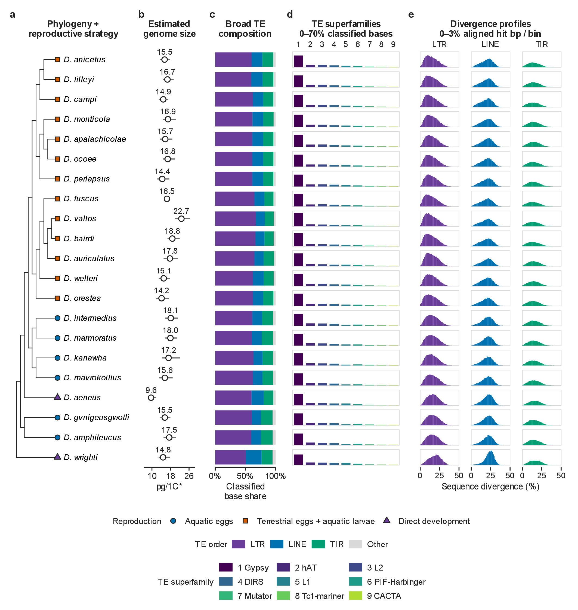
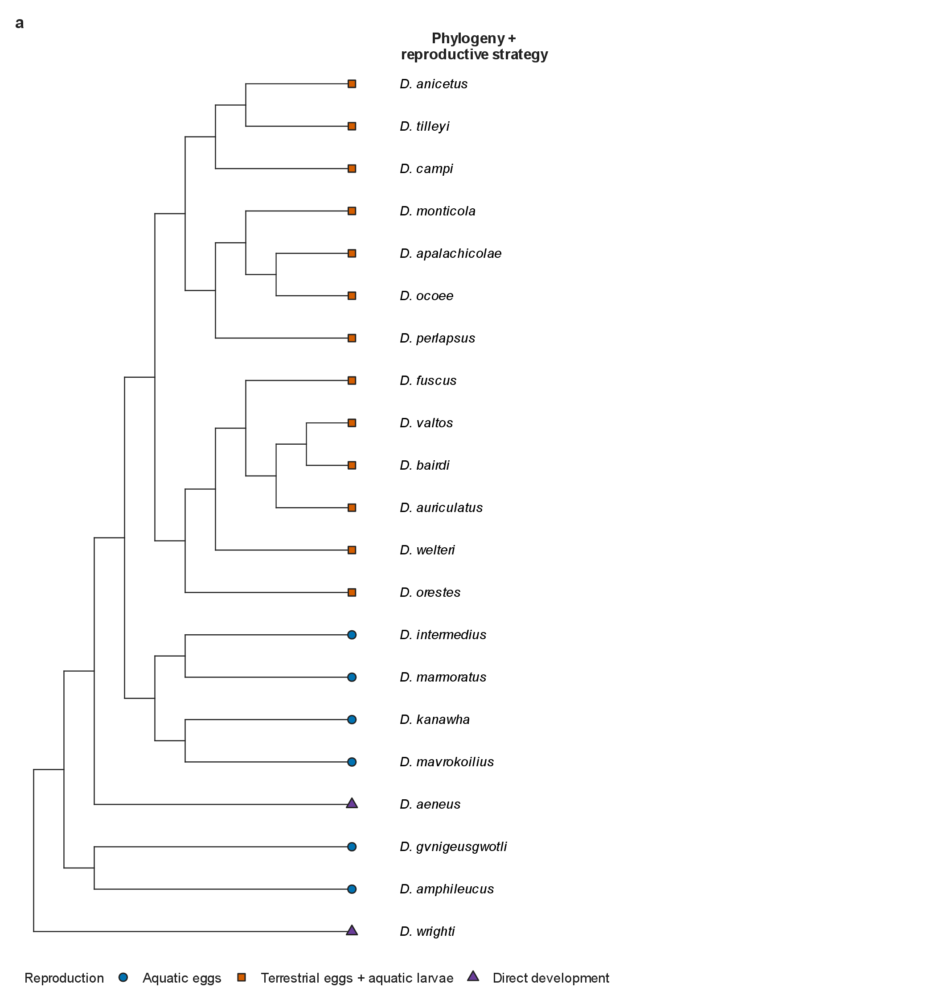
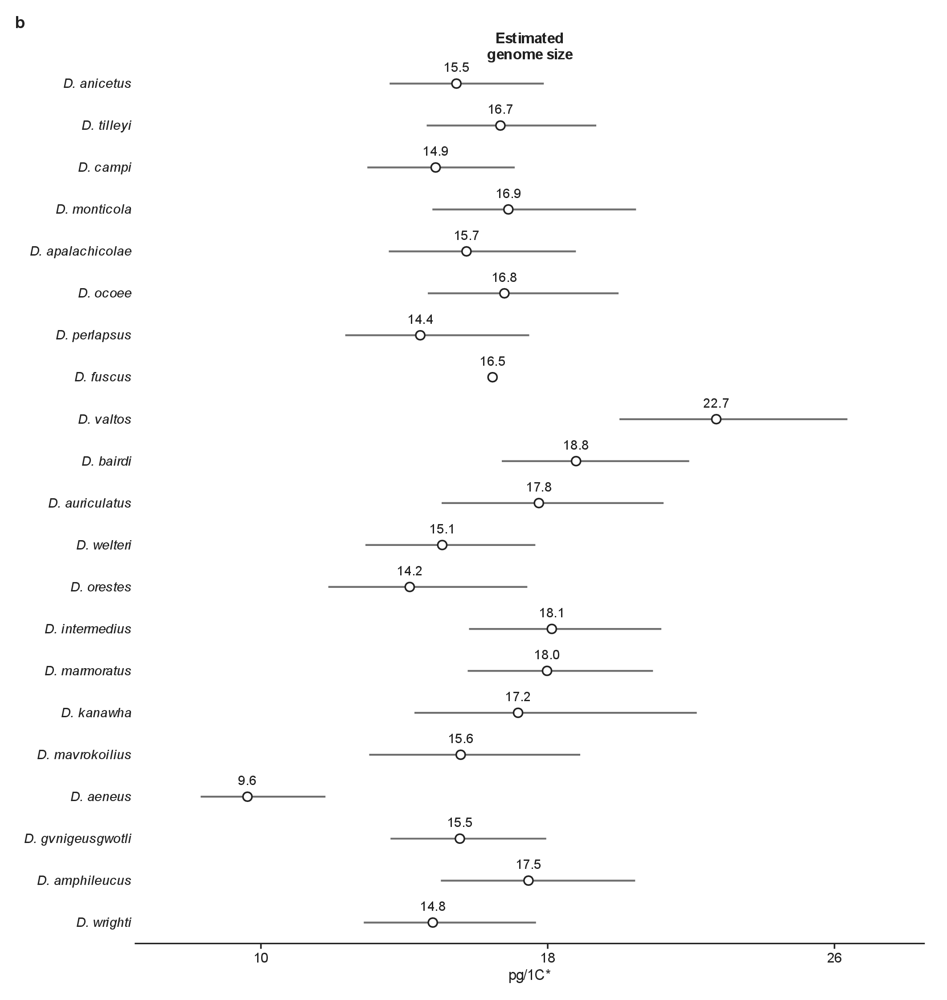
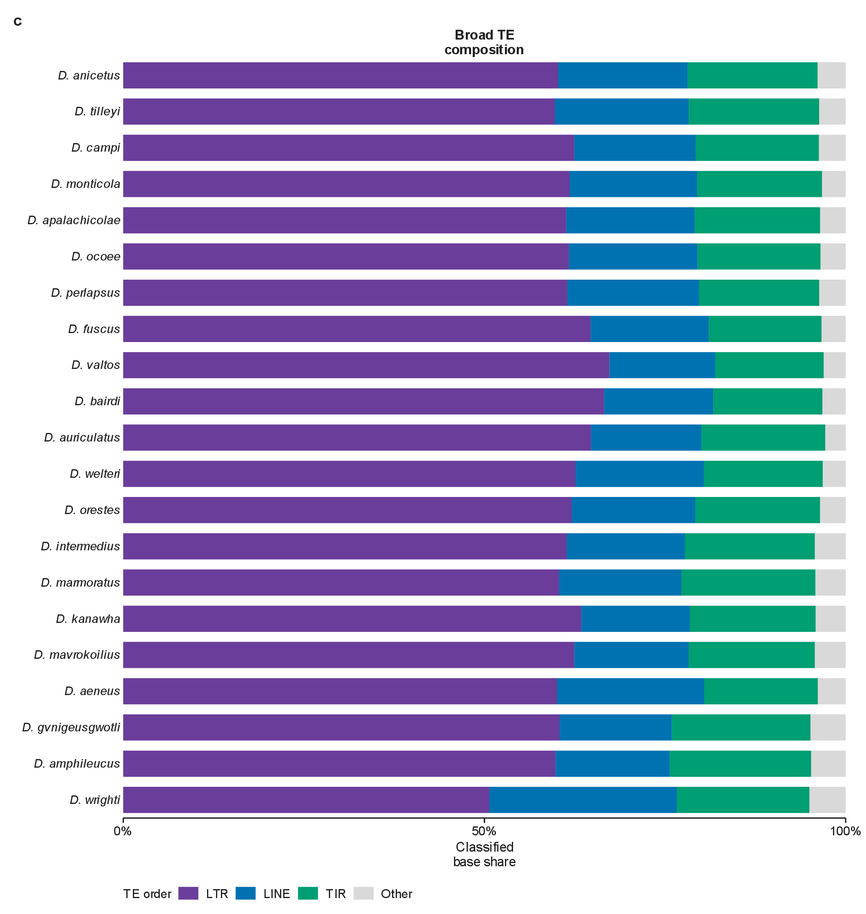
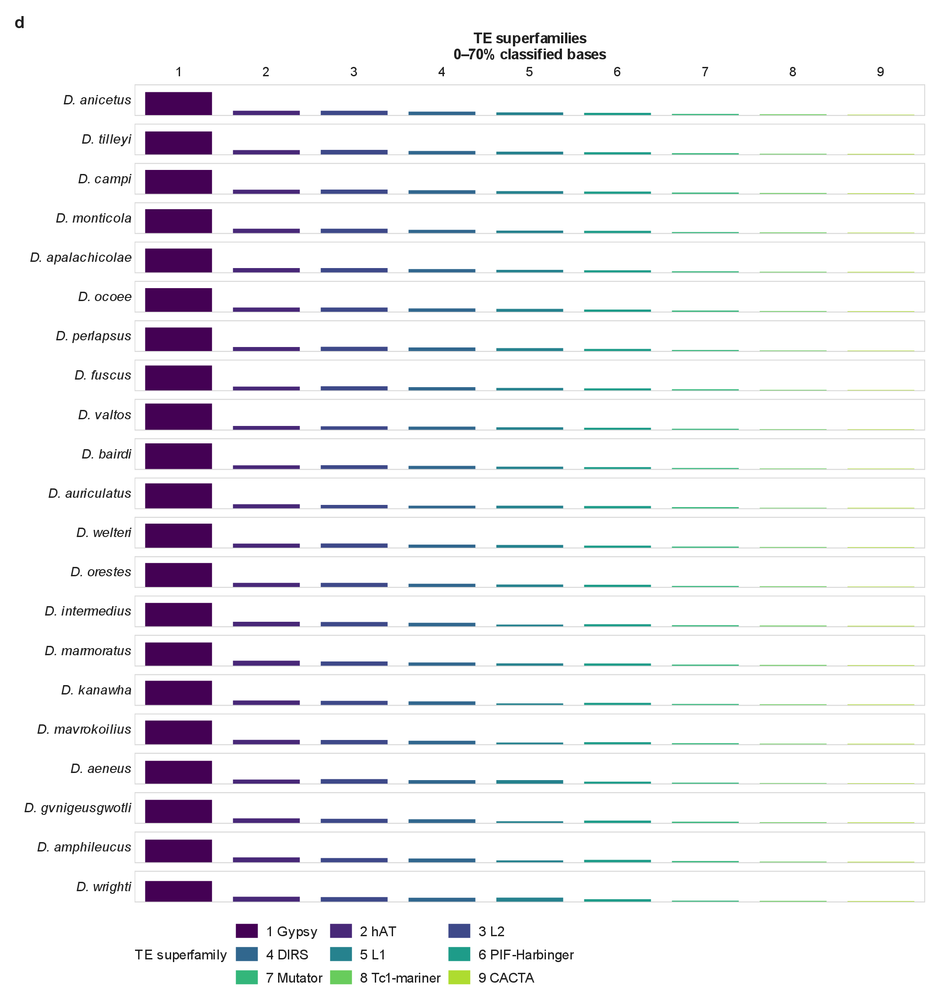
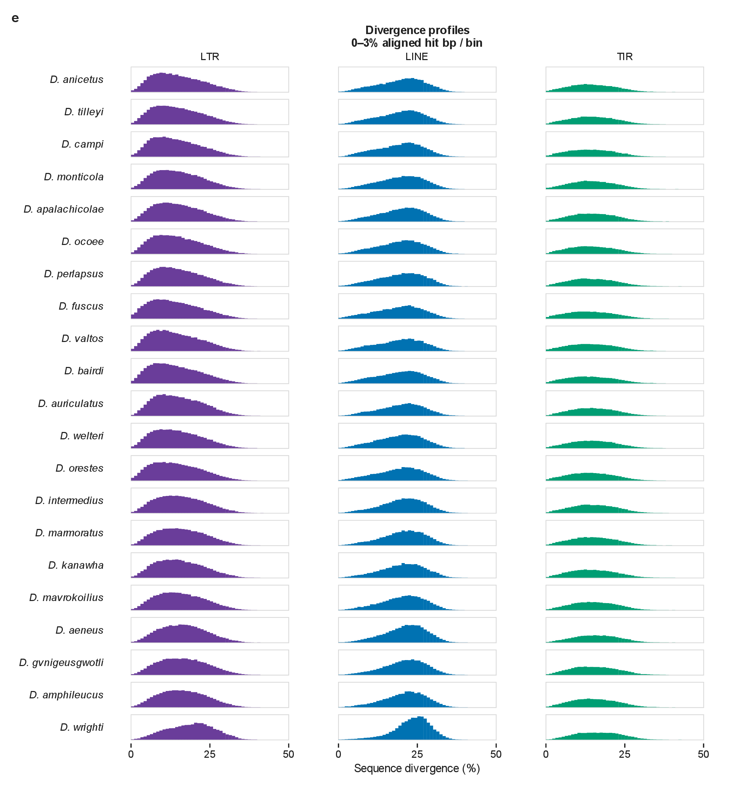

Full collage
PDF · Full-size PNG · CMYK TIFF


TE composition and divergence profiles vary among the 21 species with both genomic and cellular-trait data. Every panel shares one fixed phylogenetic row order, adapting the aligned-track layout of Wang et al. (2025; doi:10.1038/s42003-025-08127-3). Panel a is a topology-only prune of the supplied species tree; branch lengths are omitted because the tree's publication, calibration, and time provenance remain unresolved. Panel b shows D. fuscus assembly-anchored IOD-derived pg/1C estimates and conditional 95% measurement-bootstrap intervals. Uniform circles and one-decimal labels show each estimate on an 8-27 pg/1C axis. Image-quality and specimen-support cautions remain in S24; intervals are conditional on the observed support. These are not independently measured species C-values, and intervals exclude anchor uncertainty. Panel c shows broad-order shares of classified dnaPipeTE aligned bases. Panel d shows the nine most abundant superfamilies from the same assay: every miniature bar uses the common 0–70% height scale, and numbered positions match the legend. Panel e shows LTR, LINE, and TIR RepeatMasker divergence profiles in 1-percentage-point bins from 0 to 50%; all 63 profiles use the same 0–3% vertical scale, measured as each bin's share of all RepeatMasker-aligned hit bp for that species. Absent order/bin combinations are zero-filled without renormalizing the displayed subset. dnaPipeTE composition and RepeatMasker landscape denominators are distinct; neither is genome occupancy, and divergence is not insertion age.
a - Phylogeny and reproductive strategy
PDF · Full-size PNG · CMYK TIFF


The original topology-only tree and reproductive-strategy symbols for the 21 species shared by the genomic and cellular-trait panels. Species labels retain the collage order. Branch lengths and a time scale are omitted because the source tree's publication, calibration, and time provenance remain unresolved.
b - Estimated genome size
PDF · Full-size PNG · CMYK TIFF


Estimated genome sizes (pg/1C*) derived from IOD and anchored to the D. fuscus assembly, with 95% measurement-bootstrap intervals. One common circle symbol is used and each estimate is labelled to one decimal place. The 8-27 pg/1C axis retains every interval. These are not independent species C-values; intervals exclude anchor uncertainty and remain conditional on observed image and animal support. Support cautions are retained in S24 rather than encoded by changing point symbols.
c - Broad TE composition
PDF · Full-size PNG · CMYK TIFF


Broad TE-order shares of classified dnaPipeTE aligned bases for the same 21 species. LTR, LINE, TIR, and Other retain the collage's category colours and common 0-100% scale. These are composition fractions within the assay, not genome occupancy.
d - TE superfamilies
PDF · Full-size PNG · CMYK TIFF


The same nine abundant dnaPipeTE superfamilies in the same numbered positions and species order. Every row's miniature bars share the original 0-70% classified-aligned-base scale, from the bottom to the top of its frame. The numbered legend identifies every family; the selected subset is not renormalized.
e - Repeat divergence profiles
PDF · Full-size PNG · CMYK TIFF


The original 63 LTR, LINE, and TIR RepeatMasker profiles, with every row labelled by species. Each profile retains 0-50% sequence divergence in 1-percentage-point bins and 0-3% of all RepeatMasker-aligned hit bp for that species, from the bottom to the top of its frame. Absent order/bin combinations are zero-filled without subset renormalization. The denominator differs from dnaPipeTE composition. Divergence is not insertion age, and hit-bp fractions are not genome occupancy.